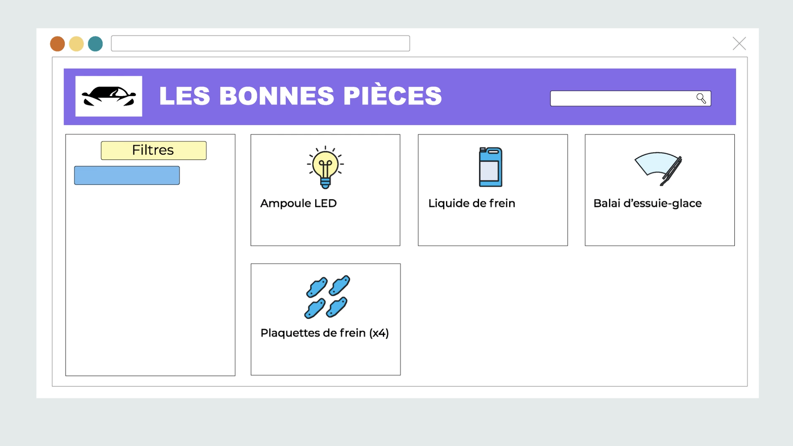

[MON] Créez des pages web dynamiques avec JavaScript
- Killian ROYANT
Ce MON a pour objectif d'apprendre à utiliser le DOM et les données (API, JSON, etc.) à l'aide de JavaScript afin de créer des pages web dynamiques. Ce DOM nous permettra de générer automatiquement des éléments HTML à partir de données stockées dans des fichiers, des bases de données ou sur des serveurs distants.
Introduction
Afin d'obtenir les connaissances nécessaires à la réalisation de mon POK, je souhaite me former au développement Web Full Stack. Pour y parvenir, il m'a semblé nécessaire de choisir deux MON proposés par la plateforme de formation Openclassrooms. Ce premier MON explique comment utiliser le language Javascript pour parvenir à développer des pages web dynamiques, en apprenant notamment à utiliser les fichiers JSON, les API ou encore des librairies.

Présentation
Ce MON a pour objectif d'apprendre à utiliser le DOM et les données (API, JSON, etc.) à l'aide de JavaScript afin de créer des pages web dynamiques. À l'aide du DOM, on pourra générer automatiquement des éléments HTML à partir de données stockées dans des fichiers, des bases de données ou sur des serveurs distants.
Ce MON repose en grande partie sur une formation proposée par Openclassrooms accessible ci-dessous. Des compléments à cette formation peuvent également être trouvés sur YouTube. J'ai fournis quelques liens ci-dessous.

La formation est très claire et très simple à suivre, comme la plupart des formations proposées par Openclassrooms. Le formateur propose différents exemples concrets repris tout au long de la formation. La formation est composée de vidéos, de cours écrits, d'exemples et d'exercices à chaque étape. À la fin de chaque chapitre, un quiz est proposé afin d'évaluer notre compréhension des différents acquis du chapitre.
Ressources
Résumé du MON
Présentation du JSON
Le JSON est un format de données très utilisé pour échanger des informations entre un serveur et un site web. Il est très simple à utiliser et à comprendre. Il est composé de paires clé/valeur. Les clés sont des chaînes de caractères et les valeurs peuvent être de différents types : chaînes de caractères, nombres, booléens, tableaux, objets ou null.
Exemple :
{
"nom": "Dupont",
"prenom": "Jean",
"age": 42,
"majeur": true,
"adresse": {
"rue": "1 rue de la paix",
"ville": "Paris",
"codePostal": "75000"
},
"enfants": ["Marc", "Marie", "Julie"]
}
Présentation du DOM
Le DOM est un modèle de données qui représente les éléments HTML d'une page web. Il est composé de noeuds qui sont des éléments HTML. Ces éléments sont hiérarchisés et peuvent être sélectionnés à l'aide de sélecteurs. Le DOM est très utilisé pour modifier le contenu d'une page web, ajouter ou supprimer des éléments HTML.
Afin d'interagir avec le DOM, il faut utiliser JavaScript. Il est possible d'ajouter ou de supprimer des éléments HTML à l'aide de propriétés ou de méthodes. Il est également possible de modifier le contenu d'un élément HTML existant. Parmi les propriétés et méthodes les plus utilisées, on peut citer :
document.getElementById(): permet de sélectionner un élément HTML à l'aide de son identifiant.document.createElement(): permet de créer un élément HTML.document.createTextNode(): permet de créer un noeud texte.element.appendChild(): permet d'ajouter un élément HTML à un autre élément HTML.element.removeChild(): permet de supprimer un élément HTML.- etc...
Présentation des API
Les API sont des interfaces qui permettent de récupérer des données depuis un serveur. Ces données peuvent être des données brutes ou des données structurées. Les API sont très utilisées pour récupérer des données depuis un serveur et les afficher sur une page web. Il existe de nombreuses API open source auxquelles ont peut accéder librement, par exemple : OpenWeatherMap, OpenFoodFacts, OpenStreetMap, OpenDataSoft, OpenDataFrance, OpenDataParis, etc.
Pour accéder à une API, on peut également utiliser JavaScript. Il est possible d'utiliser XMLHttpRequest ou Fetch. Les deux méthodes sont très similaires. La méthode Fetch est plus récente et plus simple à utiliser. Elle est donc préférée.
Présentation des librairies
Les librairies sont des bibliothèques qui contiennent des fonctions et des méthodes qui permettent de réaliser des tâches plus rapidement. Il existe de nombreuses librairies, par exemple : jQuery, Bootstrap, React, Vue, Angular, Lodash, Moment, Chart.js, Leaflet, D3, etc.
Pour utiliser une librairie, il faut la télécharger et la inclure dans notre page web. Il est également possible d'utiliser des CDN (Content Delivery Network) qui permettent d'inclure une librairie dans notre page web sans avoir à la télécharger. Les librairies sont très utiles pour, par exemple, réaliser des animations ou pour générer des graphiques.